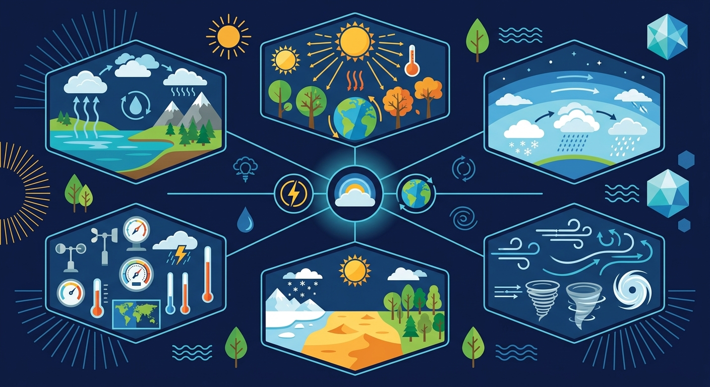
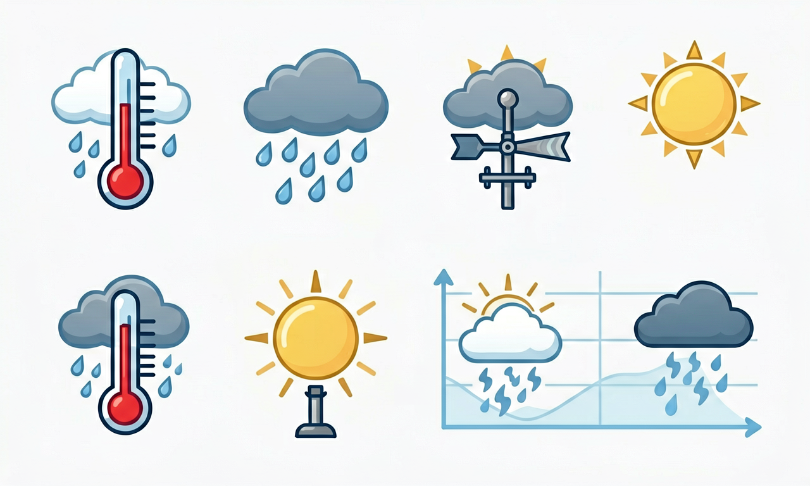
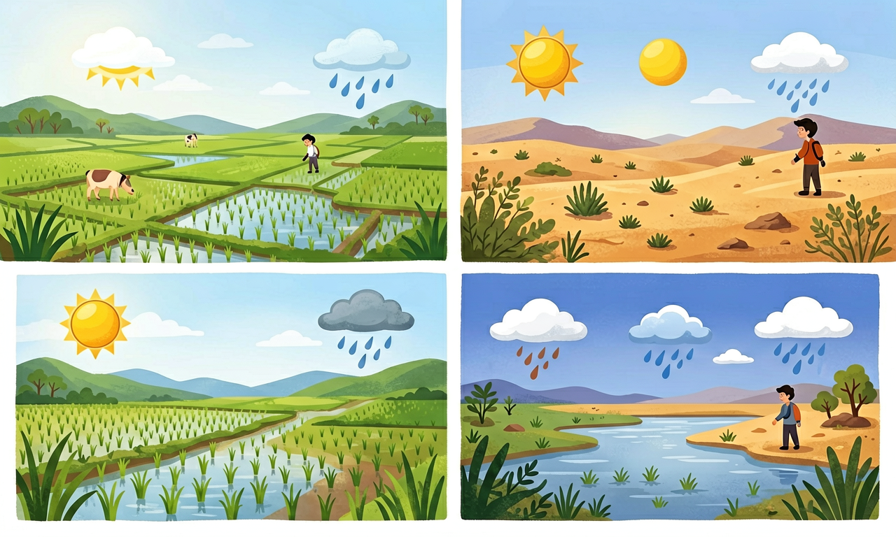

今天下雨、明天放晴是天气；一年四季温暖湿润是气候。读懂气候规律，才能理解季节与农业生产。

选择或输入后，这节课会围绕你的问题展开。
「昆明四季如春」描述的是？
先选一个，错了正好暴露你的前概念，我们一起纠正。
天气是某一时刻或几天的阴晴、风雨、冷暖等状况，变化快。气候是某地多年平均的天气状况，如年均气温、年降水量、季节分配，相对稳定。
气象站观测气温、湿度、气压、风向风速、降水等，积累数据才能描述气候。天气预报预测未来几天天气，不是几十年气候。

我国东部季风气候雨热同期，利于水稻生长；西北干旱少雨，适合耐旱作物。不同气候带植被、动物、民居（如南方通风、北方保暖）各不相同。
近年来全球变暖使极端天气增多，节能减排、植树护林有助于减缓气候变化影响。

把描述卡片拖到天气（短时）或气候（长期）。
拖完 6 项后自动判分。
解释题：某市统计：1月均温-2℃、7月均温28℃、年降水600mm且集中在夏季。请描述其气候特点并推测适合种植的一种作物。
提示：先概括气温季节差异和降水分配，再联系农作物需水需热。
拓展题：为什么说「今年特别热」不能代表当地气候变暖？
关于天气与气候，正确的是？
选一个并查看反馈。
迁移任务：连续一周记录家乡天气（晴雨雪、最高温），思考这与当地气候的关系。